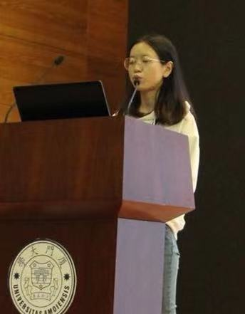

Lu Zou (邹露)
|  | Ph.D. student, |
About me
I am currently a third year Ph.D. student in University of Science and Technology of China, supervised by Prof. Zhangjin Huang and Prof. Naijie Gu.
Before that, I received the B.Sc. degree at the College of Information Engineering from Sichuan Agricultural University in 2018.
Research Interests: Object Pose Estimation, Human Activity Analysis, 3D Object Detection, Point Cloud Processing, etc.
Publications
 |
|
 |
|
 |
|
 |
|
Awards
Third Prize, the 16th "Challenge Cup" Competition (Leader), China, 2019
Huawei Scholarship, University of Science and Technology of China Special Scholarship, 2019
Gold Prize, 8th "Challenge Cup" Competition (Leader), Anhui Province, 2019
Excellent Thesis, Sichuan Agricultural University, 2018
Top Ten Entrepreneurship and Innovation Talents, School of Information Engineering of Sichuan Agricultural University, 2018
Second Prize, Special Scholarship of Sichuan Agricultural University, 2017
First Prize, Internet of Things Innovation and Application Competition (Leader), Sichuan Agricultural University, 2017
Excellent Volunteer, Sichuan Agricultural University, 2016
National English Competition for College Students (NECCS), Third Prize, 2016
Projects
Virtual Human Based on Intelligent Voice and Mirror Interactive Hardware Platform (Leader)
the Fundamental Research Funds for the Central Universities
No. WK6030000109, 2019/01 - 2020/12
Research on Vehicle and Pedestrian Detection in Intelligent Surveillance Video (Leader)
Scientific Research Interest Training Plan for College Students of Sichuan Agricultural University
No. 04054594, 2016/09 – 2017/12